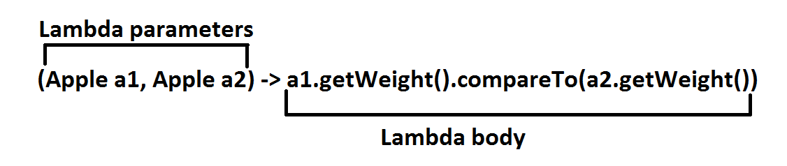
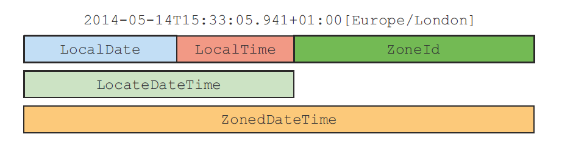
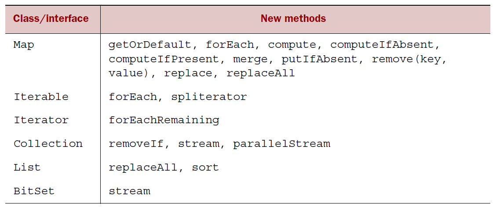

Java 8 in Action

Coding Beer Session
Created by Roman Badura
Content
Functional Programming in Java
Streams & Collectors
Optional & Nashorn &
Functional Programming in Java
Java methods and functional programming
Lambdas
Functional interfaces
Method references
Java methods and functional programming
First class citizens and Second class citizens
Function corresponds to a mathematical function
Lambdas
- Anonymous
- Function
- Passed Around
- Concise
Functional interfaces
Only one abstract method
@FunctionalInterface
public interface MyFunction<T, R> {
R apply(T t);
}
Annotation is not required
Interface can contain also default methods
They can be instantiated using lambdas
() -> System.out.println("Hello");
Functional interfaces
public Funciton<T, R> { R apply(T t); }
Function<Integer, Integer> square = x -> x * x;
public Predicate<T> { boolean test(T t);
Prediacate<Integer> makeIsDivisibleBy (int y) { return x -> x % y == 0; }
public Consumer<T> { void accept(T t); }
public Supplier<T> { T get(); }
public BiFunction<T, U, R> { R apply(T t, U u); }
In package: java.util.function (42-43)
http://docs.oracle.com/....Method references
Reuse existing method definitions
More readable
| Lambda | Method reference equivalent |
|---|---|
| (Apple a) -> a.getWeight() | Apple::getWeight |
| (str, i) -> str.substring(i) | String::substring |
| (String s) -> System.out.println(s) | System.out::println |
How to construct method references
A MR to a static method
Integer::parseInt
A MR to an instance of an arbitrary type
String::length
A MR to an instance method of an existing object
Transaction expTransaction = Transaction::new;
expTransaction::getValue
Reference to constructor
ClassName::new
Streams
Fancy iterators over a collection of data
Pipelining
Internal iteration
Declarative
Composable
Parallelizable
Comparision Streams Vs Collections
Collections are about data
Collection is an in-memory
Streams are about computation
Streams is a fixed data structure whose elements are computed on demand
Java 7
List<Dish> lowCaloricDishes = new ArrayList<>();
for(Dish d: menu){
if(d.getCalories() < 400){
lowCaloricDishes.add(d);
}
}
Collections.sort(lowCaloricDishes, new Comparator<Dish>() {
public int compare(Dish d1, Dish d2){
return Integer.compare(d1.getCalories(), d2.getCalories());
}
});
List<String> lowCaloricDishesName = new ArrayList<>();
for(Dish d: lowCaloricDishes){
lowCaloricDishesName.add(d.getName());
}
Java 8
List<String> lowCaloricDishesName =
menu.stream()
.filter(d -> d.getCalories() < 400)
.sorted(comparing(Dish::getCalories))
.map(Dish::getName)
.collect(toList());
Stream pipeline
Intermediate operations
Terminal operations
- Result is any non-stream value (List, Integer, void ...)
Filtering
Stream<T> filter(Predicate predicate);
dishes.stream().filter(d -> d.getCalories() > 300).skip(2)
Mapping
Select information from certain objects
Can be chained
<R> Stream<R> map(Function<? super T, ? extends R> mapper);
dishes.stream.map(Dish::getCalories).collect(Collectors.toList());
Flat map
<R> Stream<R> flatMap(Function<? super T, ? extends Stream<? extends R>> mapper);
Finding and Matching
Another data processing idiom is finding whether some elements in a set of data match a given property
- allMatch
- anyMatch
- noneMatch
- findFirst
- findAny
Primitive stream specializations
Avoid hidden boxing costs
When stream is empty return 0
IntStream | mapToInt
DoubleStream | mapToDouble
LongStream | mapToLong
Creation of streams
- From explicit values - static method Stream.of
- From array - Arrays.stream(arr)
- From files - Files.lines(Paths.get("file.txt"))
- From functions - Stream.iterate and Stream.generate
- Empty stream - Stream.empty
Collecting data with streams : Collectors
Parameters to Stream method collect
Reducing and summarizing stream elements to a single value
Grouping elements
Partitioning elements
Reducing and summarizing
Finding max and min
- Collectors.counting()
- Collectors.maxBy
- Collectors.minBy
Summarization
- Collectors.summing [Int, Double, Long]
- Collectors.averaging [Int, Double, Long]
- Collectors.summarizingIng [Int, Double, Long]
Joining Strings
- Collectors.joining()
Null references
Introduced by Tony Hoare in 1965
“My billion-dollar mistake"
Groovy (def variable = person?.car?.insurance?.name
Haskel (Maybe type)
Scala (Option[T])
Optional
Optional represents the existence or absence of a value
Optional helps design more comprehensible API
Doesn't implement Serializable
Primitive specialized version
Optional class
- isPresent
- ifPresent(Consumer<T> block)
- get()
- orElse(T other)
- map(Function<? super T, ? extends U> mapper))
- flatMap(Function<? super T, Optional<U>> mapper)
- filter(Predicate<? super T> predicate)
Optional<Insurance> optInsurance = ...;
optInsurance.filter(insurance -> "alianz".equals(insurance.getName()))
.ifPresent(x -> System.out.println("ok"));
Creating Optional objects
- Empty optional
Optional<Car> optCar = Optional.empty(); - Optional from a non-null value
Optional<Car> optCar = Optional.of(car); - Optional from null
Optional<Car> optCar = Optional.ofNullable(car);
Nashorn
Javascript engine
$ cd /usr/bin
$ ln -s $JAVA_HOME/bin/jjs jjs
$ jjs
jjs> print("Hello world");
ScriptEngine engine = new ScriptEngineManager().getEngineByName("nashorn");
engine.eval("print('Hello world!');");
Java classes can be referenced from javascript via the Java.type
Types conversions
ScriptObjectMirror -> callMember
Language Extensions
- Typed Arrays
- Collections and For Each
- Lambda expressions and Streams
- Extending classes
- Parameter overloading
- Import scopes
- Command line scripts
Interface changes
Static methods are allows in interface
Default methods - allows you to provide default implementation for methods in an interface
default void sort(Comparator<? super E> c){
Collections.sort(this, c);
}
Class can inherit more than one methods with the same signature
New syntax: X.super.method()
For interface is not possible to implement methods from Object
Date and Time API
LocalDate
TemporalField
ChronoField
LocalTime
LocalDateTime
Date and Time API
Instant
Duration
Period
TemporalAdjusters
DateTimeFormatter
DateTimeFormatterBuilder
Different Time Zones and Calendars
java.time.ZoneId
ZoneOffset
ThaiBuddhistDate, MinguoDate, JapaneseDate, and Hijrah-Date
Language updates
CompletableFuture
LongAdder, LongAccumulator, Double...
ConcurrentHashMap - methods (forEach, reduce, search...
Arrays - methods (parallelSort, setAll, parallelSetAll...)
Number and Math (sum, min, max, addExact ....)
Files - methods (find, walk, list, lines)
Reflection
String => String.join(" ", "Raoul", "mario", "alan");
Collections - new methods
THE END
- Source code - https://github.com/Alexander10/coding-beer-sessions.git